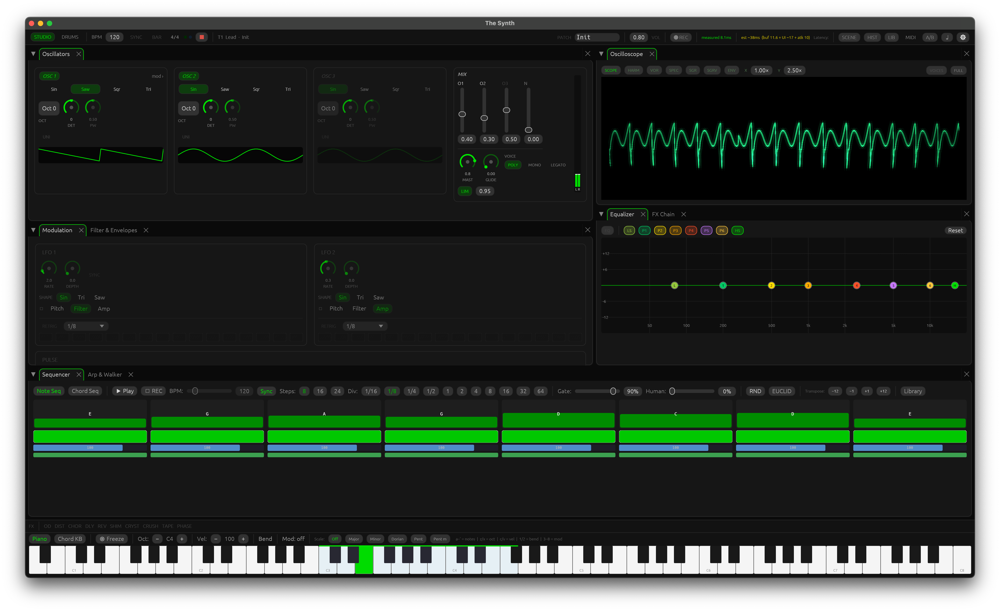
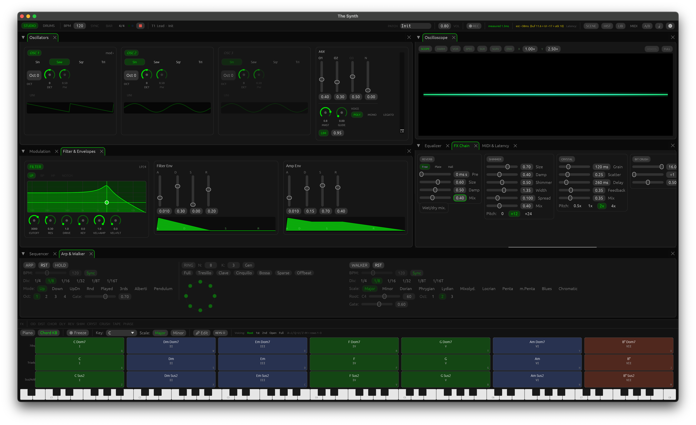
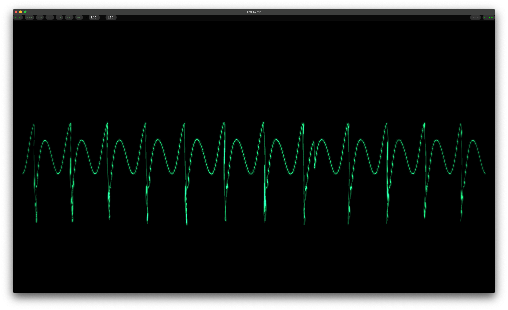

Forma
A polyphonic software synthesizer for macOS, built in Rust. 171 presets, mod matrix, full FX chain, MIDI learn — no subscription, no account.
Requires macOS 13 or later · Apple Silicon & Intel



What's inside
Oldest-first voice stealing, velocity sensitivity, mono/legato with portamento.
Sine, saw, square, triangle, noise. Unison up to 5 voices, FM, ring mod, hard sync.
2 LFOs, 4 free-routing slots, aftertouch and mod wheel as sources.
Overdrive · Distortion · Chorus · Delay · Reverb · Shimmer · Crystallizer.
20 categories — Ambient, Cinematic, Lead, Pad, Bass, and more.
8-channel × 16-step sequencer with Euclidean rhythm generator and per-step velocity.
Click any knob, move a hardware CC to bind. Factory mappings for Arturia KeyLab.
16-step melodic patterns, arpeggiator, scale walker, chord voicings.
How to use it
Quick start
- Launch Forma. It opens with the Init patch loaded — a basic saw wave ready to play.
- Press keys on your computer keyboard (A–' are white keys, W E T Y U O P are sharps). Z / X shift octaves. Space freezes the last note.
- Open the PATCH browser and pick any preset from the 171 factory patches to hear what the synth can do.
- Connect a MIDI keyboard: open the MIDI & Latency tab, select your device from the list. Forma auto-reconnects on next launch.
Computer keyboard layout
Forma maps your QWERTY keyboard to a two-octave piano — GarageBand style.
Connecting a MIDI keyboard
- Plug in your USB MIDI keyboard.
- In Forma, open the MIDI & Latency tab (top bar).
- Select your device from the MIDI Input dropdown. The indicator turns green when notes arrive.
- Under Keyboard Presets, click your keyboard model (Arturia KeyLab MkIII / MiniLab MkIII, or Generic) to load a factory CC mapping — knobs and faders will control the synth immediately.
- Forma remembers the last connected device and reconnects automatically on next launch.
MIDI Learn: right-click any knob → MIDI Learn, then move a hardware knob or fader. The binding is saved with the session.
Program Change: send a PC message from your keyboard to jump to any of the 171 factory patches by index.
Browsing & saving patches
- Click PATCH in the top bar to open the patch browser.
- Use the category list on the left to filter by type (Ambient, Bass, Lead, Pad…). The search box filters by name.
- Click a patch name to load it instantly — no need to confirm.
- Star a patch with the ★ button to add it to Favourites. Access favourites via the ★ filter or from your MIDI keyboard (Arturia KeyLab: CC 62).
- To save your own sound: dial in your patch, type a name in the patch name field (top bar), then click SAVE. It writes a plain JSON file you can back up or share.
Patch history auto-snapshots every few seconds of silence. Access snapshots from the History panel to step back through edits.
Oscillators, filter & envelopes
Open the VOICE tab in the Studio view.
- Enable up to 3 oscillators independently
- Mix waveforms: sine, saw, square, triangle, noise
- Unison stacks up to 5 detuned copies per oscillator — great for super-saws
- FM uses OSC 2 to frequency-modulate OSC 1 at audio rate
- Ring mod multiplies OSC 1 × OSC 2 for metallic tones
- Hard sync resets OSC 2 phase to OSC 1 — sweep OSC 2 pitch for classic sync sounds
- Filter: Moog-style 4-pole lowpass with resonance, drive, and key tracking
- Filter envelope amount can go negative (inverts the sweep)
- Amp & filter each have independent ADSR envelopes
- Mono/legato: enable in the voice header — portamento glide time is adjustable
Modulation matrix
Open the MOD tab. Forma has 2 LFOs and 4 free-routing mod slots.
- Set an LFO waveform and rate (Hz or BPM-synced). Enable Retrigger to reset phase on each note.
- In the mod matrix, choose a source (LFO 1/2, envelope, velocity, aftertouch, mod wheel) and a destination (pitch, filter cutoff, amp, pan, oscillator params…).
- Set the amount with the slider — negative values invert the modulation.
- Use Pulse lanes for rhythmic gate-based modulation tied to the BPM clock.
Aftertouch and mod wheel are always available as sources — use them for expressive vibrato or filter sweeps during performance.
Sequencer & arpeggiator
Open the SEQ tab in the Studio view.
Step sequencer:
- Click steps to toggle them on/off. Each active step plays at the pitch you set below it.
- Set a scale and root note — the sequencer snaps pitches to the scale.
- Use chord mode to play full chords per step.
- Press Play or hit Space to start. BPM is shared with the drum machine.
Arpeggiator: hold one or more notes and the arp plays them in pattern. Modes include up, down, up+down, random, and chord. The Scale Walker generates a generative random walk within the active scale — useful for ambient textures.
Drum machine
Switch to Drum Machine mode from the top-left mode selector.
- Click grid cells to toggle steps. Each row is a channel: KICK, SNARE, HAT, CLAP, TOM×2, PERC, NOISE.
- Drag vertically on a step to set its velocity.
- Click Euclid on any lane to auto-generate a Euclidean rhythm — set hits, steps, and offset.
- Use A/B/C/D pattern slots to arrange different beats. Copy/paste between slots.
- Click the channel name to open the Voice editor — tune pitch, decay, noise mix, and envelope per drum sound.
- Solo, Mute, Reverse, and Randomize buttons are at the end of each lane.
Save a kit (all 8 voice settings) with the Save Kit button — kits are independent of patches.
FX chain
Open the FX tab. Effects run in series in the order shown.
- Toggle each effect on/off independently
- Overdrive / Distortion: saturation and harmonic color before reverb
- Chorus: spread and depth for stereo width
- Delay: BPM-synced or free, with feedback and mix
- Reverb: three algorithms — Freeverb, Plate, FDN Hall
- Shimmer: pitch-shifted reverb feedback for ambient pads
- Crystallizer: granular pitch-shift effect for glassy textures
- EQ: 8-band parametric — drag dots on the canvas to reshape
When Load FX with patch is on (patch browser toggle), loading a preset restores its FX chain. Turn it off to keep your current FX while auditioning sounds.
Build from source (Rust / macOS)
git clone https://github.com/Ven7u/forma-synth.git cd forma-synth cargo run -p forma --release
Rust stable 1.75+ required. First build takes a few minutes — LTO is enabled across DSP crates.